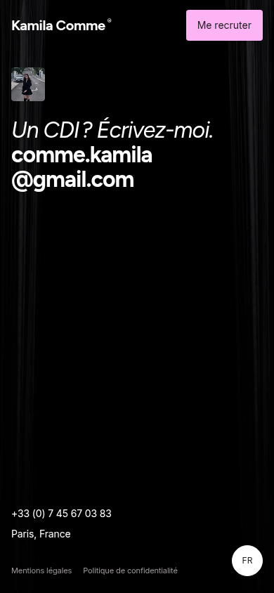
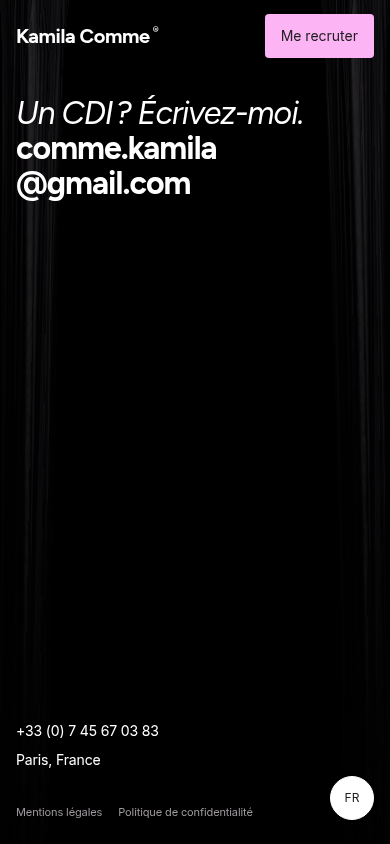
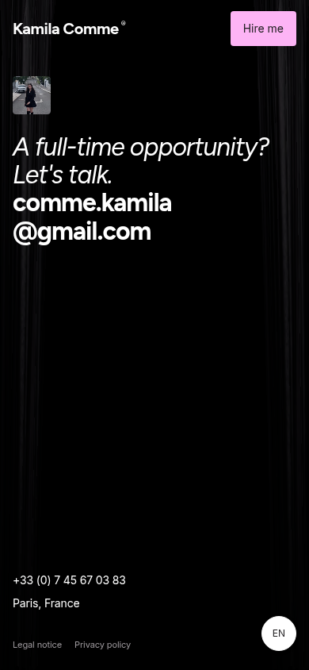
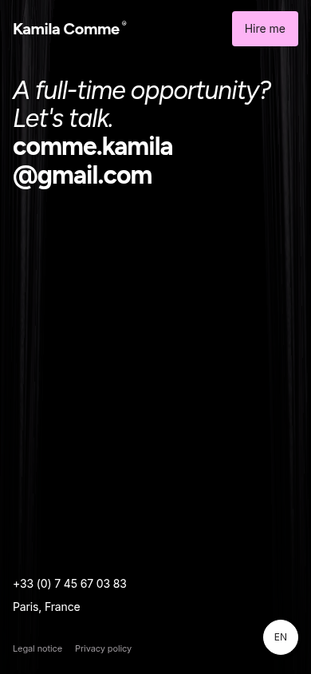

Actual Chromium captures of the current site and a temporary browser-only proposal. Proposed versions remove the media and reclaim its 72px mobile slot/gap. No application source was modified.




Measurements and proposal notes